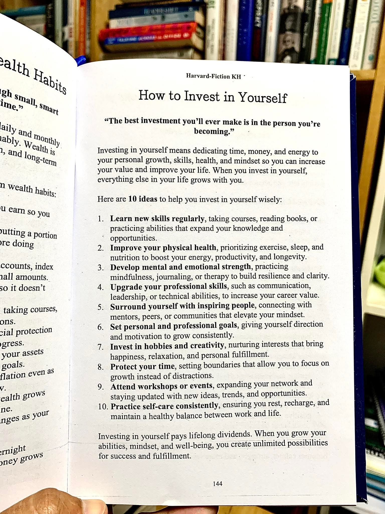

Resonansi di Kota Kembang
Sebuah narasi tentang algoritma kehidupan, batas waktu, dan seni menginvestasikan diri di sudut-sudut sunyi kota Bandung.
Hujan di Jalan Ganesha selalu memiliki aroma yang khas: perpaduan antara tanah basah, aspal tua, dan sisa-sisa kafein yang menguap dari cangkir-cangkir mahasiswa yang bergegas mencari tempat berteduh. Di bawah kanopi salah satu kedai kopi bernuansa industrial tidak jauh dari gerbang kampus, empat cangkir caturangga kehidupan sedang merumuskan masa depan mereka sendiri. Bandung sore itu muram, tetapi di dalam kepala mereka, lampu-lampu gagasan menyala dengan intensitas penuh.
Arkan, seorang kandidat doktor di bidang rekayasa kecerdasan buatan, sedang menatap baris-baris kode penjelas di layar laptopnya. Jari-jarinya yang panjang sesekali mengetuk meja kayu, mengikuti ritme ketukan instrumen jazz yang mengalun samar. Di sebelahnya situlah Citra, seorang perancang lanskap urban sekaligus kurator pameran independen yang matanya selalu menangkap detail yang dilewatkan orang lain. Di seberang meja, pandangan tajam milik Damar—seorang analis risiko keuangan yang dingin—bertemu dengan senyum tenang milik Elena, dokter muda yang baru saja menyelesaikan giliran jaga tiga puluh enam jam di Rumah Sakit Hasan Sadikin.
Mereka adalah representasi dari lingkaran terdidik yang tumbuh besar dalam kepungan ekspektasi urban Bandung. Cerdas, visioner, namun tidak luput dari kecemasan eksistensial yang kerap mengintai manusia modern di usia akhir dua puluhan.
Bagian I: Paradoks Pertumbuhan
“Kita selalu berasumsi bahwa optimasi adalah akhir dari pencarian,” ujar Arkan memecah keheningan, membalikkan layar laptopnya agar bisa dilihat oleh ketiga sahabatnya. Di sana, sebuah grafik pemelajaran mesin sedang menunjukkan kurva penurunan eror yang melandai tajam. “Tetapi dalam model stokastik, jika kamu tidak memberikan gangguan atau variasi baru, sistem akan mengalami kejenuhan. Dia berhenti belajar.”
Elena menyesap teh kamomilnya perlahan, merasakan kehangatan menjalar di tenggorokannya yang kering. “Sama seperti tubuh manusia, Arkan. Homeostasis itu penting untuk bertahan hidup, tetapi jika otot tidak diberi beban baru, dia akan mengalami atrofi. Masalahnya adalah, kapan kita tahu beban itu membangun atau justru menghancurkan?”
Citra tersenyum kecil sembari membuka sebuah buku catatan sketsa yang bersampul kulit hitam. Ia memperlihatkan halaman tengah yang terbuka, di mana ia baru saja mengambil foto sebuah halaman buku motivasi klasik yang ia temukan di toko buku bekas di Jalan Palasari pagi tadi. Halaman itu bertajuk How to Invest in Yourself.

“Aku menemukan ini tadi pagi,” kata Citra, mengetuk jemarinya di atas gambar cetakan tersebut. “Sepuluh ide lama yang ditulis ulang, tetapi entah mengapa terasa begitu menampar ketika aku membacanya di tengah kemacetan Pasteur. Kita sibuk membangun infrastruktur kota, mengoptimalkan portofolio, menulis paper, tetapi seberapa sering kita benar-benar mengalokasikan sumber daya terbaik kita untuk manusia yang sedang kita bentuk di dalam cermin ini?”
Damar, yang sejak tadi sibuk memeriksa grafik pergerakan pasar obligasi di ponselnya, meletakkan gawai tersebut dengan ketukan yang agak keras. Sebagai seorang pragmatis sejati, ia selalu melihat dunia dari lensa kalkulasi matematis yang ketat. Nilai intrinsik, risiko, dan pengembalian investasi (ROI) adalah bahasa ibunya.
“Mari kita bedah secara objektif,” tantang Damar, matanya berbinar memancarkan kecerdasan analitis yang tajam. “Sebagian besar orang mengira investasi diri hanyalah jargon pemasaran industri buku terlaris. Namun jika kita bawa ke dalam fungsi utilitas ekonomi tradisional, keputusan untuk menyisihkan waktu saat ini demi kapasitas di masa depan adalah bentuk diskonto waktu yang rasional. Masalahnya, sebagian besar kalangan terdidik terjebak dalam perangkap pertumbuhan linier.”
Arkan mengangguk setuju. Ia mengambil selembar kertas tisu dan pulpen, lalu menuliskan sebuah persamaan formal yang langsung menarik perhatian Damar dan Elena.
“Jika $V(t)$ adalah nilai modal manusia kita pada waktu $t$,” Arkan menjelaskan dengan nada suara seperti sedang mengisi seminar di aula barat. “Di mana $S(\tau)$ merepresentasikan tingkat keahlian dan kesehatan spiritual, sedangkan $C(\tau)$ adalah konsumsi energi kita. Faktor $\rho$ adalah tingkat diskonto psikologis kita terhadap masa depan. Jika kita terlalu fokus pada hasil instan, nilai $\rho$ menjadi sangat besar, yang berarti nilai masa depan kita di mata kita sendiri menyusut menjadi nol.”
Bagian II: Mengupgrade Keterampilan dan Menjaga Waktu
Diskusi beralih ketika hujan di luar semakin deras, menciptakan tirai air yang memisahkan kafe hangat itu dari hiruk-pikuk kota. Citra menunjuk poin keempat pada gambar yang ia bawa: Upgrade your professional skills. Menurutnya, keterampilan profesional di era modern tidak lagi berbentuk menara vertikal tunggal, melainkan sebuah struktur jaring yang saling silang.
“Aku seorang perancang lanskap,” kata Citra, matanya berbinar. “Tetapi jika aku tidak mempelajari sosiologi ruang dan dasar-dasar pemrograman spasial, desainku hanya akan menjadi dekorasi mati yang tidak fungsional bagi masyarakat Dago atau Gedebage. Menambah keahlian baru secara reguler bukan sekadar opsi egois untuk menaikkan nilai tawar di pasar kerja; itu adalah tanggung jawab moral kita sebagai manusia yang diberi hak istimewa berupa pendidikan.”
Elena menghela napas panjang, mengingat kembali jam kerjanya yang brutal. Poin kedelapan pada lembar tersebut tertulis dengan jelas: Protect your time. Baginya, ini adalah poin yang paling sulit sekaligus paling krusial.
“Melindungi waktu adalah kemewahan tertinggi di abad ini,” tutur Elena lirih. “Di rumah sakit, waktu diukur dengan detak jantung dan tekanan darah. Satu detik keterlambatan bisa berarti hilangnya satu nyawa. Namun ketika aku pulang, aku menyadari aku sering lupa menetapkan batas untuk diriku sendiri. Aku membiarkan kecemasan akan pekerjaan menyita waktu tidurku, waktu bacaku, bahkan waktu untuk sekadar duduk diam menikmati angin Bandung.”
“Investasi terbaik yang akan pernah kamu lakukan adalah pada orang yang kamu tuju untuk menjadi.” Kutipan itu menggantung di udara, menantang keempat anak muda tersebut untuk merenungkan kembali arah kompas hidup mereka.
Damar bersandar pada kursi kayunya, melipat tangan di dada. “Secara finansial, waktu adalah satu-satunya aset yang memiliki depresiasi mutlak tanpa ada kemungkinan untuk diproduksi ulang. Jika kamu salah mengalokasikan aset itu pada gangguan yang tidak produktif, kamu sedang melakukan aksi bunuh diri finansial secara perlahan. Hukum akumulasi modal menyatakan bahwa pertumbuhan eksponensial hanya terjadi jika ada reinvestasi hasil secara konsisten.”
Ia kemudian mengambil pulpen dari tangan Arkan dan menambahkan visualisasi matematika di bawah rumus sebelumnya, menggambarkan bagaimana modal keahlian berakumulasi melalui proses investasi yang kontinu:
“Di mana $I(t)$ adalah intensitas investasi diri yang kita lakukan—seperti kursus, seminar, menjaga nutrisi—dan $\delta$ adalah laju depresiasi keahlian atau degradasi fisik karena usia,” jelas Damar dengan artikulasi yang rapi. “Jika $I(t) \le \delta S(t)$, keahlian dan kapasitas mental kita sebenarnya sedang menyusut, meskipun kita merasa kita sibuk bekerja setiap hari.”
Bagian III: Jaringan Manusia dan Kesehatan Mental
Citra menatap rumus yang ditulis Damar, lalu menggelengkan kepala sambil tersenyum. “Kalian para pria selalu mencoba mengonversikan jiwa manusia ke dalam angka-angka dingin. Bagaimana dengan poin kelima? Surround yourself with inspiring people. Apakah lingkaran pertemanan kita bisa dihitung dengan fungsi diferensial?”
“Tentu bisa,” sela Arkan sambil tertawa. “Teori graf dinamis menyatakan difusi informasi dalam jaringan sosial dapat dimodelkan secara matematis. Kita adalah fungsi dari lima orang terdekat yang paling sering berinteraksi dengan kita.”
“Tetapi ini bukan sekadar tentang metrik atau jejaring profesional untuk mencari proyek, Arkan,” sanggah Citra lembut. “Ini tentang mencari resonansi. Berada di sekitar orang-orang yang menginspirasi, seperti kalian bertiga, memberiku ruang aman untuk gagal dan energi untuk mencoba lagi. Bandung bisa menjadi tempat yang sangat kompetitif dan penuh kepura-puraan di media sosial. Memiliki komunitas yang menjaga kewarasan dan mendorong kita tumbuh secara spiritual adalah bentuk investasi kesehatan mental yang tak ternilai.”
Elena membenarkan perkataan Citra. Sebagai dokter, ia sering melihat bagaimana isolasi sosial dan tekanan lingkungan urban merusak kesehatan fisik pasien secara nyata. Penyakit psikosomatis, gangguan kecemasan, hingga depresi klinis sering kali berakar dari ketidakmampuan individu untuk menemukan lingkungan yang suportif dan kegagalan dalam mempraktikkan perawatan diri secara konsisten (Practice self-care consistently).
“Banyak rekan sejawatku yang tumbang,” kata Elena dengan pandangan menerawang ke luar jendela, melihat lampu-lampu jalanan Bandung yang mulai menyala keemasan di balik kabut tipis. “Mereka sangat cerdas, lulusan terbaik, tetapi mereka lupa bahwa mereka bukan mesin pengetik resep atau operator pisau bedah. Mereka lupa berinvestasi pada hobi, pada kreativitas yang membebaskan, seperti yang tertulis di poin ketujuh.”
Bagian IV: Dividen Masa Depan
Malam pun jatuh di kawasan Ganesha. Hujan mulai mereda, meninggalkan genangan-genangan air yang memantulkan cahaya neon kota. Diskusi panjang malam itu tidak menghasilkan sebuah kesimpulan mutlak, melainkan sebuah kesadaran baru yang tertanam di dalam sanubari masing-masing tokoh.
Arkan menyadari bahwa riset doktoralnya tidak boleh mengasingkannya dari kemanusiaannya sendiri; ia harus menyisihkan waktu untuk membaca buku di luar bidang sains. Citra memantapkan niatnya untuk mulai membatasi proyek komersial demi membangun ruang pameran kolektif yang lebih idealis. Damar mulai melihat bahwa kesehatan fisik dan ketenangan emosional adalah komponen utama dalam rumus stabilitas jangka panjangnya. Sementara Elena berjanji pada dirinya sendiri untuk berani berkata tidak pada jam kerja tambahan yang merusak ritme sirkadiannya.
Investasi pada diri sendiri, seperti yang tertera pada baris penutup selebaran yang dibawa Citra, memang selalu membayar dividen sepanjang hayat. Ketika kemampuan, pola pikir, dan kesejahteraan seseorang tumbuh, semesta peluang baru akan terbuka lebar secara organik.
Mereka berempat membereskan barang-barang mereka, bersiap melangkah kembali ke dalam dinamika kota Bandung yang dinamis. Langkah kaki mereka terasa lebih ringan, bukan karena beban hidup mereka berkurang, melainkan karena kapasitas internal mereka baru saja diperluas melalui dialog yang jujur.